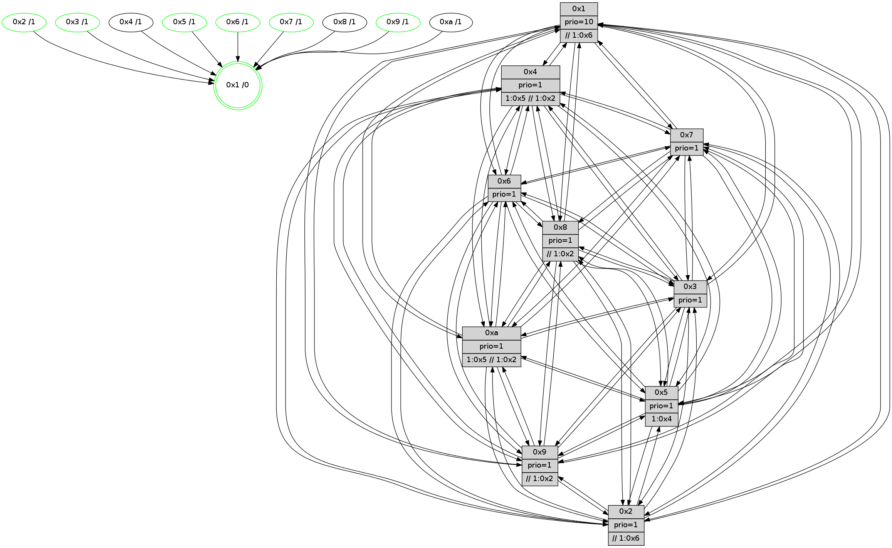

>> << IDX [start] -100 -25 -5 +0 +5 +25 +100 [715.263391972]
 Previous packets
----------------------------------------------------------------------
710.534605 beacon01(faad) #0 coord=01,02,03,04,05,06,07,0a,09,08 cycle=688.0ms assoc
-- color-indic=1 64 dc 30
710.544588 beacon02(faad) #0 coord=01,02,03,04,05,06,07,0a,09,08 cycle=688.0ms assoc 64 4f 01
710.554589 beacon03(faad) #0 coord=01,02,03,04,05,06,07,0a,09,08 cycle=688.0ms assoc 64 35 4c
710.564589 beacon04(faad) #0 coord=01,02,03,04,05,06,07,0a,09,08 cycle=688.0ms assoc 64 42 a6
710.574588 beacon05(faad) #0 coord=01,02,03,04,05,06,07,0a,09,08 cycle=688.0ms assoc 64 38 eb
710.584588 beacon06(faad) #0 coord=01,02,03,04,05,06,07,0a,09,08 cycle=688.0ms assoc 64 b6 3c
710.594589 beacon07(faad) #0 coord=01,02,03,04,05,06,07,0a,09,08 cycle=688.0ms assoc 64 cc 71
710.604594 beacon0a(faad) #0 coord=01,02,03,04,05,06,07,0a,09,08 cycle=688.0ms assoc 64 bd 7a
710.614596 beacon09(faad) #0 coord=01,02,03,04,05,06,07,0a,09,08 cycle=688.0ms assoc 64 33 ad
710.624593 beacon08(faad) #0 coord=01,02,03,04,05,06,07,0a,09,08 cycle=688.0ms assoc 64 49 e0
710.637051 [Hello(8): seq=399 sym=5,2,3,4,7,6,9,10,1 sysInfo=hasWarning stat=5:13,8,7,7/2:7,13,15,2/3:3,4,3,9/4:10,2,5,6/7:1,0,7,6/6:13,4,3,8/9:6,13,8,5/10:6,12,7,6/1:6,2,7,0]
710.639783 [Hello(5): seq=456 sym=7,6,4,3,1,9,8,10,2 sysInfo=hasWarning stat=7:3,0,8,4/6:3,0,7,7/4:14,10,15,5/3:7,7,0,6/1:3,1,6,1/9:1,3,0,0/8:4,6,15,4/10:13,11,5,5/2:6,14,2,0]
710.642473 [Hello(2): seq=452 sym=4,5,7,6,3,9,8,10,1 sysInfo=hasWarning stat=4:9,13,2,4/5:1,3,2,0/7:11,11,9,4/6:14,3,6,6/3:15,10,1,3/9:10,12,0,1/8:10,11,14,4/10:1,1,1,4/1:1,14,2,1]
710.644979 [Hello(10): seq=388 sym=6,2,3,8,9,5,7,4,1 sysInfo=hasWarning stat=6:8,2,8,3/2:3,14,14,1/3:12,3,13,5/8:10,4,3,6/9:6,13,1,4/5:4,5,2,8/7:4,1,5,3/4:3,3,12,6/1:3,2,9,1]
710.647554 [Color(5) seq=109 @0:0 prio=1 >1.@4,1.@6,1.@7,1.@9]
710.649287 [Color(2) seq=101 @0:0 prio=1 >>1.@2,1.@3,1.@5]
710.651231 [STC(1) #0.65 tree-change,inconsistent-stability,stable,to-color d=0]
710.652847 [Color(6) seq=109 @0:0 prio=1]
710.654262 [Color(3) seq=107 @0:0 prio=1]
710.659851 [Color(7) seq=97 @0:0 prio=1]
710.662137 [Hello(9): seq=399 sym=5,2,3,4,7,6,8,10,1 sysInfo=hasWarning stat=5:3,10,1,8/2:6,4,9,5/3:14,10,1,8/4:1,5,1,5/7:5,7,9,4/6:0,11,4,6/8:8,11,10,2/10:7,6,7,7/1:0,15,9,1]
710.664786 [Color(1) seq=136 @0:0 prio=10 >>1.@2,1.@3,1.@5]
710.666559 [Color(9) seq=104 @0:0 prio=1 >>1.@2,1.@3,1.@5]
----------------------------------------------------------------------
711.322735 beacon01(faad) #0 coord=01,02,03,04,05,06,07,0a,09,08 cycle=688.0ms assoc
-- color-indic=1 64 08 05
711.332717 beacon02(faad) #0 coord=01,02,03,04,05,06,07,0a,09,08 cycle=688.0ms assoc 64 9b 34
711.342719 beacon03(faad) #0 coord=01,02,03,04,05,06,07,0a,09,08 cycle=688.0ms assoc 64 e1 79
711.352718 beacon04(faad) #0 coord=01,02,03,04,05,06,07,0a,09,08 cycle=688.0ms assoc 64 96 93
711.362720 beacon05(faad) #0 coord=01,02,03,04,05,06,07,0a,09,08 cycle=688.0ms assoc 64 ec de
711.372717 beacon06(faad) #0 coord=01,02,03,04,05,06,07,0a,09,08 cycle=688.0ms assoc 64 62 09
711.382718 beacon07(faad) #0 coord=01,02,03,04,05,06,07,0a,09,08 cycle=688.0ms assoc 64 18 44
711.392722 beacon0a(faad) #0 coord=01,02,03,04,05,06,07,0a,09,08 cycle=688.0ms assoc 64 69 4f
711.402723 beacon09(faad) #0 coord=01,02,03,04,05,06,07,0a,09,08 cycle=688.0ms assoc 64 e7 98
711.412724 beacon08(faad) #0 coord=01,02,03,04,05,06,07,0a,09,08 cycle=688.0ms assoc 64 9d d5
711.423701 [STC(2)->1 #0.65 tree-change,inconsistent-stability,stable,to-color d=1]
711.424932 [Hello(1): seq=365 sym=4,2,9,5,10,3,8,6,7 sysInfo=coloring-mode-on,ColoringModeRequestCalled stat=4:4,1,4,0/2:0,10,12,8/9:4,0,6,0/5:15,8,5,0/10:9,15,11,7/3:4,12,2,11/8:7,15,15,6/6:3,10,13,7/7:3,1,3,8]
711.427415 [Hello(6): seq=456 sym=2,3,5,4,7,9,8,10,1 sysInfo= stat=2:7,10,14,7/3:0,1,6,7/5:0,9,5,9/4:1,4,5,0/7:8,7,3,1/9:4,10,7,6/8:0,15,7,5/10:6,7,13,6/1:14,15,3,1]
711.432000 [Hello(4): seq=456 sym=5,7,6,2,3,9,8,10,1 sysInfo= stat=5:3,12,4,7/7:9,4,7,2/6:2,6,8,8/2:10,14,3,7/3:10,9,14,5/9:2,5,3,3/8:8,11,6,7/10:0,9,8,6/1:14,8,7,1]
711.435092 PARSE ERROR************************
Traceback (most recent call last):
File "PacketAnalysis.py", line 167, in showOperaPacket
structPacket = OperaPacketParse.parsePacket(rawPacket)
File "../../pkg-python/HipSens/Core/OperaPacketParse.py", line 461, in parsePacket
return parseHelloMessage(data)
File "../../pkg-python/HipSens/Core/OperaPacketParse.py", line 109, in parseHelloMessage
sysInfo,stability,colorInfo = struct.unpack("!HBB", linkList[0:4])
error: unpack requires a string argument of length 4
48 34 03 00 01 c8 00 02 02 12 01 00 07 00 06 00 02 00 04 00 08 00 09 00 0a 00 05 00 53 04 00 00 00 00 4c 12 17 06 24 67 80 9b 85 5e 43 05 24 46 6a ea 57 8f 75 46 53 f8
711.438138 [STC(4)->1 #0.65 tree-change,inconsistent-stability,to-color d=1]
711.439405 [STC(8)->1 #0.65 tree-change,inconsistent-stability,to-color d=1]
711.442494 [Hello(7): seq=456 sym=2,3,5,6,4,8,9,10,1 sysInfo=hasWarning stat=2:14,8,12,9/3:15,15,8,9/5:12,11,8,11/6:4,9,7,3/4:11,9,2,0/8:3,5,10,4/9:2,4,10,8/10:9,5,11,7/1:7,8,7,1]
711.445538 [STC(5)->1 #0.65 tree-change,inconsistent-stability,stable,to-color d=1]
711.448175 [STC(10)->1 #0.65 tree-change,inconsistent-stability,to-color d=1]
----------------------------------------------------------------------
712.110867 beacon01(faad) #0 coord=01,02,03,04,05,06,07,0a,09,08 cycle=688.0ms assoc
-- color-indic=1 64 b4 00
712.120849 beacon02(faad) #0 coord=01,02,03,04,05,06,07,0a,09,08 cycle=688.0ms assoc 64 27 31
712.130849 beacon03(faad) #0 coord=01,02,03,04,05,06,07,0a,09,08 cycle=688.0ms assoc 64 5d 7c
712.140850 beacon04(faad) #0 coord=01,02,03,04,05,06,07,0a,09,08 cycle=688.0ms assoc 64 2a 96
712.150851 beacon05(faad) #0 coord=01,02,03,04,05,06,07,0a,09,08 cycle=688.0ms assoc 64 50 db
712.160850 beacon06(faad) #0 coord=01,02,03,04,05,06,07,0a,09,08 cycle=688.0ms assoc 64 de 0c
712.170852 beacon07(faad) #0 coord=01,02,03,04,05,06,07,0a,09,08 cycle=688.0ms assoc 64 a4 41
712.180854 beacon0a(faad) #0 coord=01,02,03,04,05,06,07,0a,09,08 cycle=688.0ms assoc 64 d5 4a
712.190855 beacon09(faad) #0 coord=01,02,03,04,05,06,07,0a,09,08 cycle=688.0ms assoc 64 5b 9d
712.200856 beacon08(faad) #0 coord=01,02,03,04,05,06,07,0a,09,08 cycle=688.0ms assoc 64 21 d0
712.212356 [Hello(8): seq=400 sym=5,2,3,4,7,6,9,10,1 sysInfo=hasWarning stat=5:14,9,8,7/2:8,14,15,2/3:3,5,3,9/4:10,2,5,6/7:2,1,7,6/6:13,5,3,8/9:7,14,8,5/10:7,12,8,6/1:6,3,8,0]
712.215047 [Hello(10): seq=389 sym=6,2,3,8,9,5,7,4,1 sysInfo=hasWarning stat=6:8,3,8,3/2:3,15,14,1/3:12,4,13,5/8:10,4,3,6/9:7,14,1,4/5:4,6,2,8/7:4,2,5,3/4:3,3,12,6/1:3,3,10,1]
712.218084 [Hello(9): seq=400 sym=5,2,3,4,7,6,8,10,1 sysInfo=hasWarning stat=5:3,10,2,8/2:6,4,10,5/3:15,10,1,8/4:2,5,2,5/7:6,7,9,4/6:1,11,4,6/8:9,11,11,2/10:7,6,8,7/1:1,15,9,1]
712.220774 [Color(1) seq=137 @0:0 prio=10 >>1.@2,1.@3,1.@5]
712.222381 [Hello(5): seq=457 sym=7,6,4,3,1,9,8,10,2 sysInfo=hasWarning stat=7:3,1,8,4/6:3,1,7,7/4:14,10,15,5/3:7,8,0,6/1:3,2,7,1/9:2,4,0,0/8:5,6,15,4/10:13,11,6,5/2:6,15,2,0]
712.228731 [Hello(2): seq=453 sym=4,5,7,6,3,9,8,10,1 sysInfo=hasWarning stat=4:10,13,3,4/5:1,3,3,0/7:12,12,9,4/6:15,4,6,6/3:0,11,1,3/9:11,13,0,1/8:11,11,15,4/10:1,1,2,4/1:2,15,3,1]
712.233164 [Color(2) seq=102 @0:0 prio=1 >>1.@6,1.@7,1.@9]
712.234920 [Color(9) seq=105 @0:0 prio=1 >>1.@2,1.@3,1.@5]
712.243222 [Color(7) seq=98 @0:0 prio=1]
712.245400 [Color(3) seq=108 @0:0 prio=1]
----------------------------------------------------------------------
712.899000 beacon01(faad) #0 coord=01,02,03,04,05,06,07,0a,09,08 cycle=688.0ms assoc
-- color-indic=1 64 70 0e
712.908983 beacon02(faad) #0 coord=01,02,03,04,05,06,07,0a,09,08 cycle=688.0ms assoc 64 e3 3f
712.918983 beacon03(faad) #0 coord=01,02,03,04,05,06,07,0a,09,08 cycle=688.0ms assoc 64 99 72
712.928983 beacon04(faad) #0 coord=01,02,03,04,05,06,07,0a,09,08 cycle=688.0ms assoc 64 ee 98
712.938984 beacon05(faad) #0 coord=01,02,03,04,05,06,07,0a,09,08 cycle=688.0ms assoc 64 94 d5
712.948983 beacon06(faad) #0 coord=01,02,03,04,05,06,07,0a,09,08 cycle=688.0ms assoc 64 1a 02
712.958984 beacon07(faad) #0 coord=01,02,03,04,05,06,07,0a,09,08 cycle=688.0ms assoc 64 60 4f
712.968989 beacon0a(faad) #0 coord=01,02,03,04,05,06,07,0a,09,08 cycle=688.0ms assoc 64 11 44
712.978989 beacon09(faad) #0 coord=01,02,03,04,05,06,07,0a,09,08 cycle=688.0ms assoc 64 9f 93
712.988989 beacon08(faad) #0 coord=01,02,03,04,05,06,07,0a,09,08 cycle=688.0ms assoc 64 e5 de
713.000133 [Hello(4): seq=457 sym=5,7,6,2,3,9,8,10,1 sysInfo= stat=5:4,12,5,7/7:10,5,7,2/6:2,7,8,8/2:11,15,4,7/3:10,10,14,5/9:3,6,3,3/8:9,11,7,7/10:1,9,9,6/1:14,9,7,1]
713.003893 [Hello(1): seq=366 sym=4,2,9,5,10,3,8,6,7 sysInfo=coloring-mode-on,ColoringModeRequestCalled stat=4:5,1,5,0/2:1,11,12,8/9:4,1,6,0/5:0,8,6,0/10:9,15,12,7/3:5,13,2,11/8:8,15,0,6/6:4,11,13,7/7:4,2,3,8]
713.009143 [Hello(3): seq=457 sym=1,7,6,2,4,8,9,10,5 sysInfo= stat=1:6,0,7,1/7:8,6,4,2/6:11,9,0,8/2:14,5,5,8/4:5,0,4,4/8:7,4,5,2/9:10,14,10,6/10:15,8,8,5/5:6,4,6,7]
713.014673 [Hello(7): seq=457 sym=2,3,5,6,4,8,9,10,1 sysInfo=hasWarning stat=2:14,8,12,9/3:15,0,8,9/5:12,11,9,11/6:4,9,7,3/4:11,9,2,0/8:4,5,10,4/9:2,4,10,8/10:9,5,12,7/1:7,8,7,1]
713.023449 [Hello(6): seq=457 sym=2,3,5,4,7,9,8,10,1 sysInfo= stat=2:8,11,14,7/3:1,2,6,7/5:0,9,6,9/4:2,4,6,0/7:9,8,3,1/9:4,11,7,6/8:1,15,8,5/10:6,7,14,6/1:14,15,3,1]
----------------------------------------------------------------------
713.687130 beacon01(faad) #0 coord=01,02,03,04,05,06,07,0a,09,08 cycle=688.0ms assoc
-- color-indic=1 64 cc 0b
713.697113 beacon02(faad) #0 coord=01,02,03,04,05,06,07,0a,09,08 cycle=688.0ms assoc 64 5f 3a
713.707113 beacon03(faad) #0 coord=01,02,03,04,05,06,07,0a,09,08 cycle=688.0ms assoc 64 25 77
713.717113 beacon04(faad) #0 coord=01,02,03,04,05,06,07,0a,09,08 cycle=688.0ms assoc 64 52 9d
713.727115 beacon05(faad) #0 coord=01,02,03,04,05,06,07,0a,09,08 cycle=688.0ms assoc 64 28 d0
713.737114 beacon06(faad) #0 coord=01,02,03,04,05,06,07,0a,09,08 cycle=688.0ms assoc 64 a6 07
713.747113 beacon07(faad) #0 coord=01,02,03,04,05,06,07,0a,09,08 cycle=688.0ms assoc 64 dc 4a
713.757118 beacon0a(faad) #0 coord=01,02,03,04,05,06,07,0a,09,08 cycle=688.0ms assoc 64 ad 41
713.767118 beacon09(faad) #0 coord=01,02,03,04,05,06,07,0a,09,08 cycle=688.0ms assoc 64 23 96
713.777119 beacon08(faad) #0 coord=01,02,03,04,05,06,07,0a,09,08 cycle=688.0ms assoc 64 59 db
713.788302 [Hello(10): seq=390 sym=6,2,3,8,9,5,7,4,1 sysInfo=hasWarning stat=6:9,4,8,3/2:4,0,14,1/3:13,5,13,5/8:10,4,3,6/9:8,15,1,4/5:5,6,2,8/7:5,3,5,3/4:4,3,12,6/1:4,4,10,1]
713.791308 [Hello(8): seq=401 sym=5,2,3,4,7,6,9,10,1 sysInfo=hasWarning stat=5:15,9,8,7/2:9,15,15,2/3:4,6,3,9/4:11,2,5,6/7:3,2,7,6/6:14,6,3,8/9:8,15,8,5/10:8,12,8,6/1:7,4,8,0]
713.794032 [Hello(2): seq=454 sym=4,5,7,6,3,9,8,10,1 sysInfo=hasWarning stat=4:11,13,3,4/5:1,3,3,0/7:13,13,9,4/6:0,4,6,6/3:1,12,1,3/9:11,14,0,1/8:12,11,15,4/10:2,1,2,4/1:3,15,3,1]
713.797506 [Color(2) seq=103 @0:0 prio=1 >>1.@6,1.@7,1.@9]
713.799423 [Hello(5): seq=458 sym=7,6,4,3,1,9,8,10,2 sysInfo=hasWarning stat=7:4,2,8,4/6:4,1,7,7/4:15,10,15,5/3:8,9,0,6/1:4,2,7,1/9:2,5,0,0/8:6,6,15,4/10:14,11,6,5/2:7,0,2,0]
713.804224 [Hello(9): seq=401 sym=5,2,3,4,7,6,8,10,1 sysInfo=hasWarning stat=5:3,10,2,8/2:6,4,10,5/3:0,11,1,8/4:3,5,2,5/7:7,8,9,4/6:2,11,4,6/8:10,11,11,2/10:8,6,8,7/1:2,15,9,1]
713.807278 [Color(1) seq=138 @0:0 prio=10 >>1.@6,1.@7,1.@9]
713.809065 [Color(5) seq=111 @0:0 prio=1 >1.@4,1.@6,1.@7,1.@9]
713.810717 [Color(7) seq=99 @0:0 prio=1]
713.812614 [Color(9) seq=106 @0:0 prio=1 >>1.@2,1.@3,1.@5]
713.814697 [Color(3) seq=109 @0:0 prio=1]
713.817454 [Color(6) seq=111 @0:0 prio=1]
----------------------------------------------------------------------
714.475261 beacon01(faad) #0 coord=01,02,03,04,05,06,07,0a,09,08 cycle=688.0ms assoc
-- color-indic=1 64 f8 13
714.485244 beacon02(faad) #0 coord=01,02,03,04,05,06,07,0a,09,08 cycle=688.0ms assoc 64 6b 22
714.495244 beacon03(faad) #0 coord=01,02,03,04,05,06,07,0a,09,08 cycle=688.0ms assoc 64 11 6f
714.505243 beacon04(faad) #0 coord=01,02,03,04,05,06,07,0a,09,08 cycle=688.0ms assoc 64 66 85
714.515245 beacon05(faad) #0 coord=01,02,03,04,05,06,07,0a,09,08 cycle=688.0ms assoc 64 1c c8
714.525243 beacon06(faad) #0 coord=01,02,03,04,05,06,07,0a,09,08 cycle=688.0ms assoc 64 92 1f
714.535245 beacon07(faad) #0 coord=01,02,03,04,05,06,07,0a,09,08 cycle=688.0ms assoc 64 e8 52
714.545250 beacon0a(faad) #0 coord=01,02,03,04,05,06,07,0a,09,08 cycle=688.0ms assoc 64 99 59
714.555250 beacon09(faad) #0 coord=01,02,03,04,05,06,07,0a,09,08 cycle=688.0ms assoc 64 17 8e
714.565250 beacon08(faad) #0 coord=01,02,03,04,05,06,07,0a,09,08 cycle=688.0ms assoc 64 6d c3
714.576788 [Hello(1): seq=367 sym=4,2,9,5,10,3,8,6,7 sysInfo=coloring-mode-on,ColoringModeRequestCalled stat=4:5,1,5,0/2:1,11,12,8/9:4,2,6,0/5:0,9,6,0/10:10,15,12,7/3:6,14,2,11/8:8,15,0,6/6:5,12,13,7/7:5,3,3,8]
714.580769 [Hello(3): seq=458 sym=1,7,6,2,4,8,9,10,5 sysInfo= stat=1:6,0,7,1/7:9,6,4,2/6:12,10,0,8/2:14,5,5,8/4:5,0,4,4/8:7,4,5,2/9:10,14,10,6/10:0,8,8,5/5:6,4,6,7]
714.586465 [STC(1) #0.66 tree-change,inconsistent-stability,stable,to-color d=0]
714.588010 [Hello(4): seq=458 sym=5,7,6,2,3,9,8,10,1 sysInfo= stat=5:5,13,5,7/7:11,6,7,2/6:3,8,8,8/2:12,0,4,7/3:11,11,14,5/9:4,7,3,3/8:10,11,7,7/10:2,9,9,6/1:15,10,7,1]
714.595430 [Hello(7): seq=458 sym=2,3,5,6,4,8,9,10,1 sysInfo=hasWarning stat=2:14,8,12,9/3:15,1,8,9/5:12,11,9,11/6:5,10,7,3/4:11,9,2,0/8:4,5,10,4/9:2,5,10,8/10:10,5,12,7/1:7,8,7,1]